Send Apple Card transactions to Sure
WalletFeed sends your Apple Card, Apple Cash and Savings transactions from your iPhone to Sure. Sure is a self-hosted budget app that is a fork of Maybe Finance. You add a card account in Sure. Then you connect WalletFeed with Sign In with Sure, or with an API key.
Download WalletFeed on the App Store
Before you start
You must have these items:
- An iPhone with iOS 26 or a newer version. WalletFeed is available only in the US.
- Apple Card, Apple Cash or Savings in Wallet on that iPhone.
- WalletFeed with WalletFeed Pro, a subscription with a 1-week free trial, or a one-time Lifetime purchase.
- A Sure server and an account on that server. Sure is open source, and you can get it without a purchase.
- An
https://address for the Sure server. Step 1 gives the conditions for this address. - A computer with a web browser. You use it to add the card account in Sure, and to make an API key if you use one.
Your key stays on your iPhone
- WalletFeed keeps the API key or the sign-in in the Keychain on your iPhone. iOS encrypts the Keychain.
- The API key or the sign-in does not go to iCloud Keychain or to your other devices.
- WalletFeed has no account, and no WalletFeed server keeps the API key or the sign-in. No person at WalletFeed can see or get the API key or the sign-in.
- Your iPhone sends the API key or the sign-in only to your Sure server, in each request to your Sure server.
- When you delete the destination, WalletFeed deletes the API key or the sign-in from your iPhone. You can also revoke the key in Sure. WalletFeed revokes a sign-in on your Sure server.
Step 1: Get an HTTPS address for your Sure server
WalletFeed connects only to an address that starts with https://. With Background Sync, WalletFeed also sends transactions when your iPhone is not on your home network. Thus, your iPhone must connect to the address from all locations.
If you install Sure with Docker and do not change its configuration, Sure uses an http:// address on port 3000. WalletFeed cannot use this address. A tunnel service, for example Tailscale or Cloudflare Tunnel, can give Sure an https:// address.
-
If the address of your Sure server starts with
http://, make anhttps://address with a tunnel service. -
If a tunnel service gives Sure its
https://address, setRAILS_ASSUME_SSL: "true"in the Sure configuration.The HTTPS section of the Docker instructions for Sure gives more information.
-
Disconnect your iPhone from your home Wi-Fi.
-
On your iPhone, open the
https://address of your Sure server in Safari. -
Make sure that Sure opens.
Step 2: Add a card account in Sure
WalletFeed writes the transactions to one account in Sure. The Sure API cannot make accounts. Thus, you must add the account in Sure first.
-
On your computer, open your Sure server in a web browser.
-
If a What's new dialog opens, click Got it.
-
On Home › Dashboard, click Add account or New.
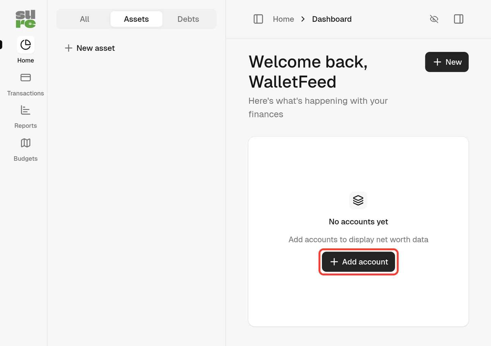
-
Click Credit Card.
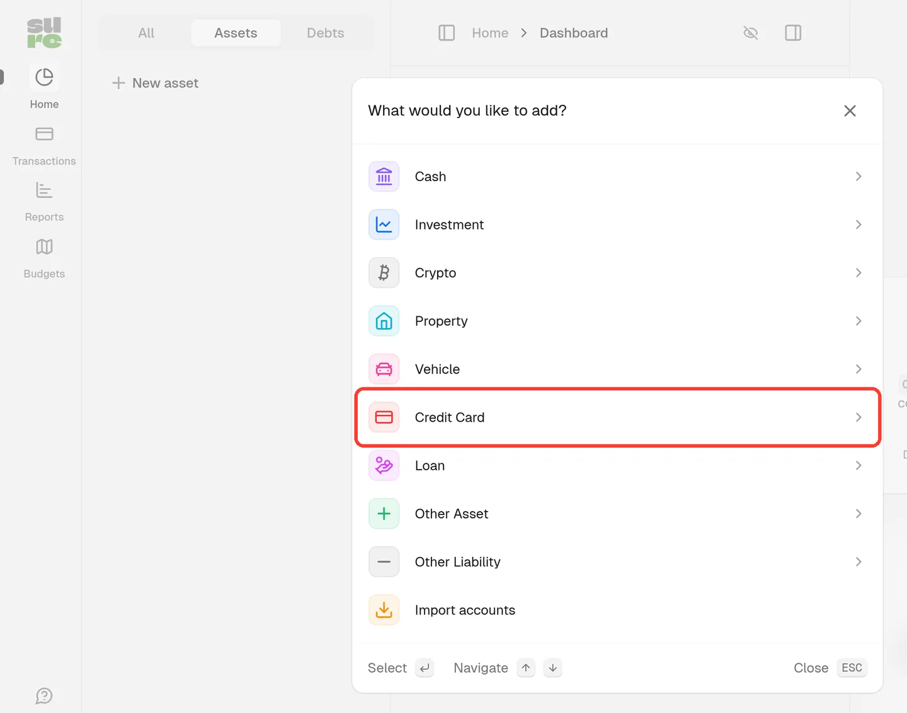
-
Click Enter account balance.
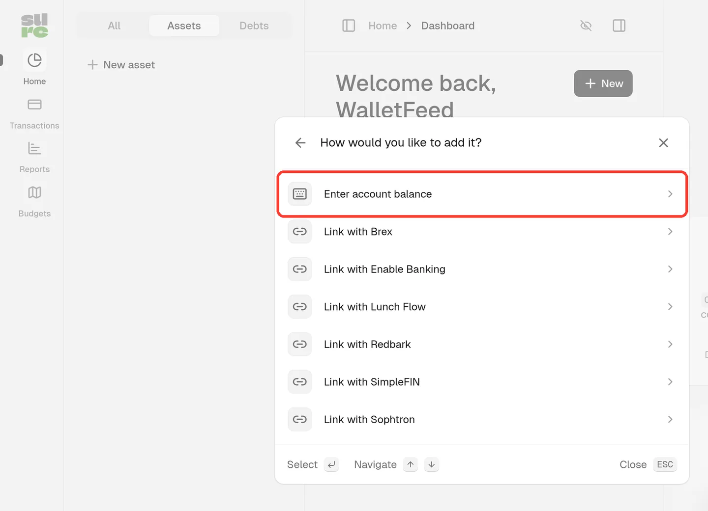
-
In Account name, type
Apple Card. -
In Balance on date:, type
0, or type the card balance on the Opening balance date. -
Click Create Account.
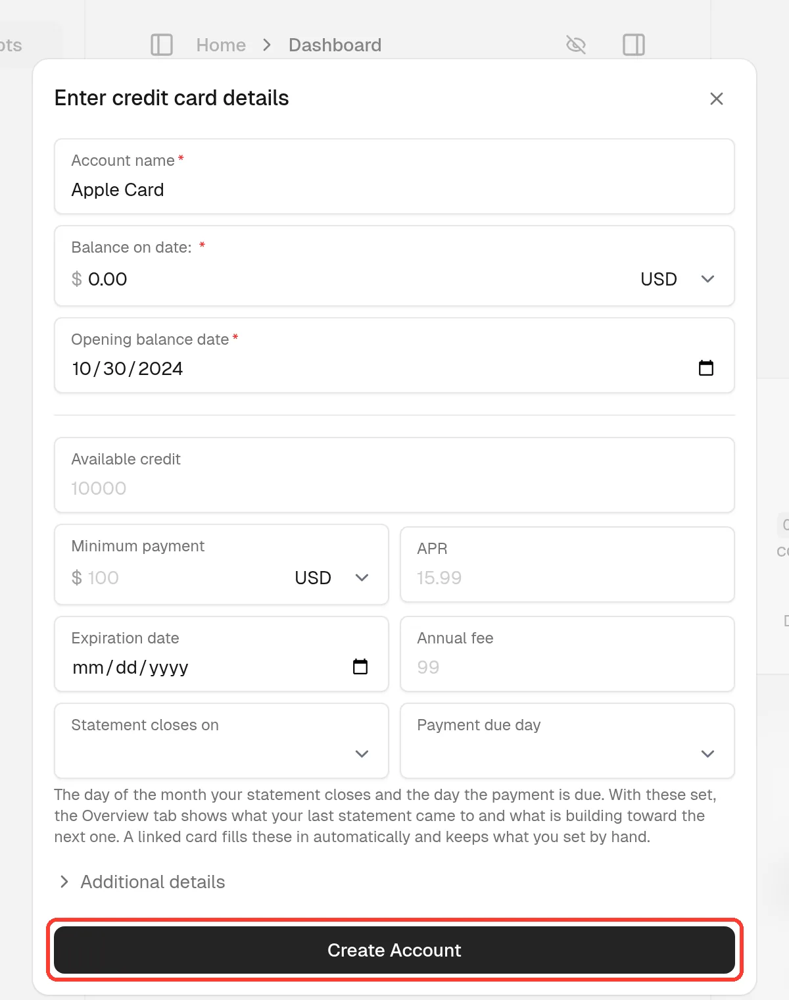
Step 3: Add Sure in WalletFeed
With Sign In with Sure, WalletFeed adds itself as an app on your Sure server. Sure shows this app in Settings › MCP. Your Sure server must have a version from June 2026 or a newer version. To use an API key, refer to Use an API key instead.
-
On your iPhone, open WalletFeed.
-
Tap Destinations.
-
Tap + at the top of the screen.

-
In Budgeting, tap Sure. If you do not have WalletFeed Pro, WalletFeed first shows the WalletFeed Pro screen.

-
In the field that shows
https://sure.example.com, type thehttps://address of your Sure server.If your server has no sign-in, WalletFeed shows "This server doesn't support sign-in. Use an API key." and the API key form. Then do the steps in Use an API key instead.
-
Tap Sign In with Sure.
-
If iOS shows "“WalletFeed” Wants to Use", then the name of your server, tap Continue.
-
If Sure shows its sign-in page, get access to your Sure account.
-
If Sure shows its dashboard, tap Cancel. Then tap Sign In with Sure again.
Sure v0.7.6 shows its dashboard after its sign-in page. Safari keeps your access to Sure, thus Sure then shows its approval page.
-
On the approval page in Sure, tap Authorize.
Result: WalletFeed shows Signed In.
-
In Account, select your card account.
If an account has Apple Card in its name, WalletFeed selects that account for you. If no account has Apple Card in its name, WalletFeed selects a credit card account.
-
Tap Add.
-
In the Send Transactions to Sure? message, tap Send.
The message tells you the data that Sure will receive, the Wallet accounts and the start date.
-
On your computer, click Transactions in Sure. Sure shows the transactions from WalletFeed in the list.
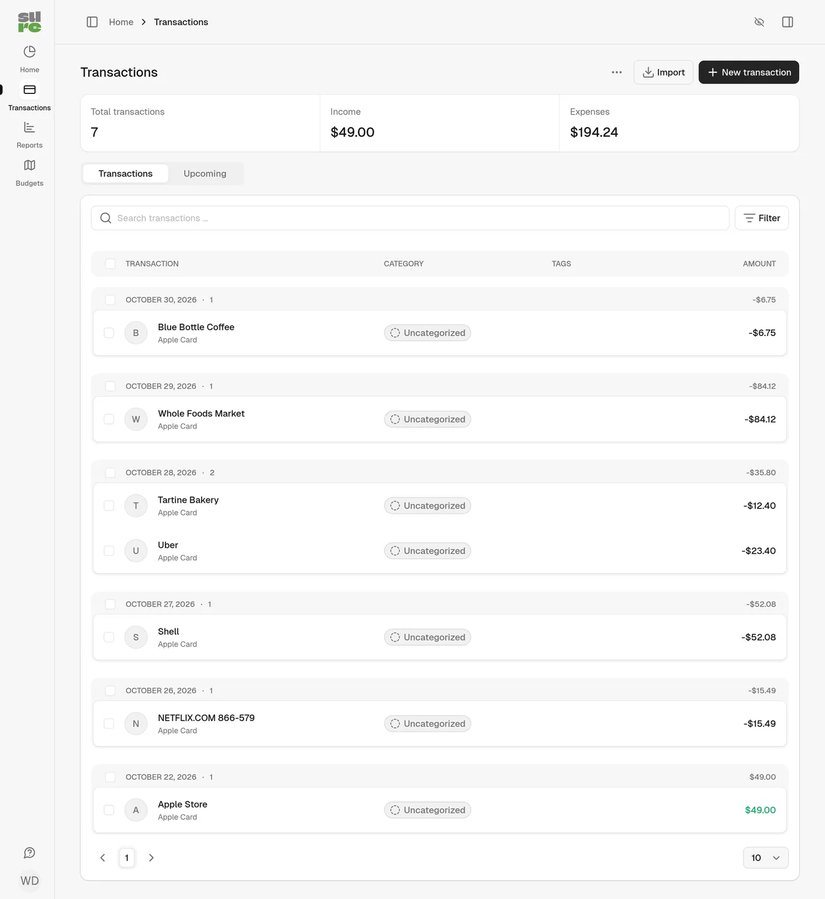
Use an API key instead
You can also connect WalletFeed to Sure with an API key. If your Sure server has no sign-in, WalletFeed opens the API key form (refer to If WalletFeed shows "This server doesn't support sign-in").
Make a Read/Write API key in Sure
WalletFeed uses the key to read your Sure accounts and to write transactions. With Universal Clipboard, you can copy the key on a Mac and paste it on your iPhone.
-
On your computer, open your Sure server in a web browser.
-
At the bottom of the left bar, click the button that shows the first letters of your name.
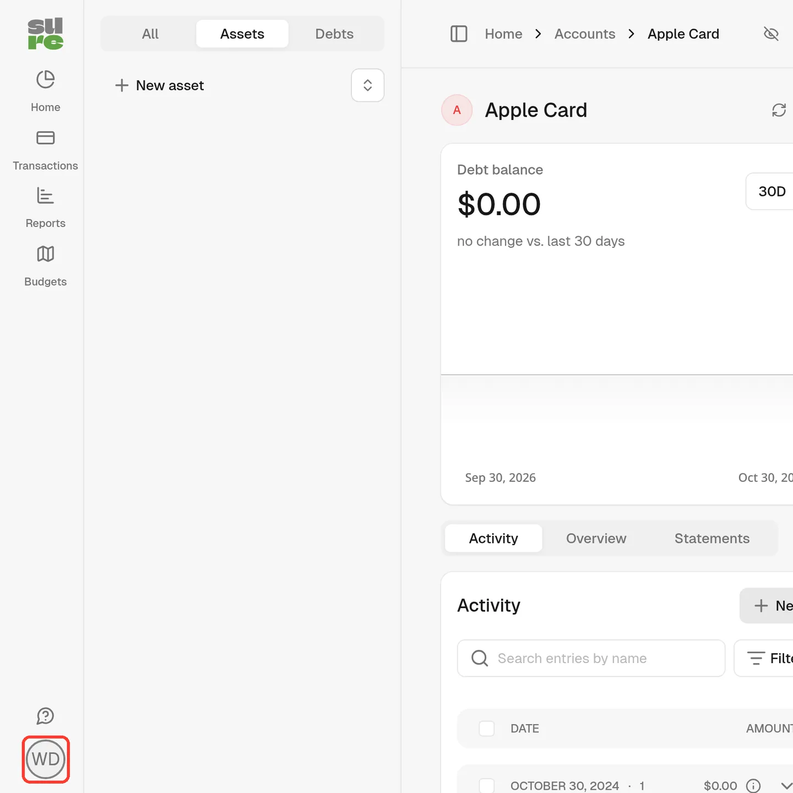
-
Click Settings.
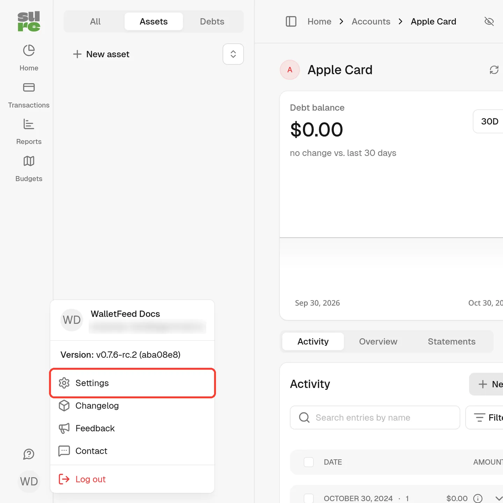
-
In the Settings list, scroll to the ADVANCED group.
-
Click API Keys.
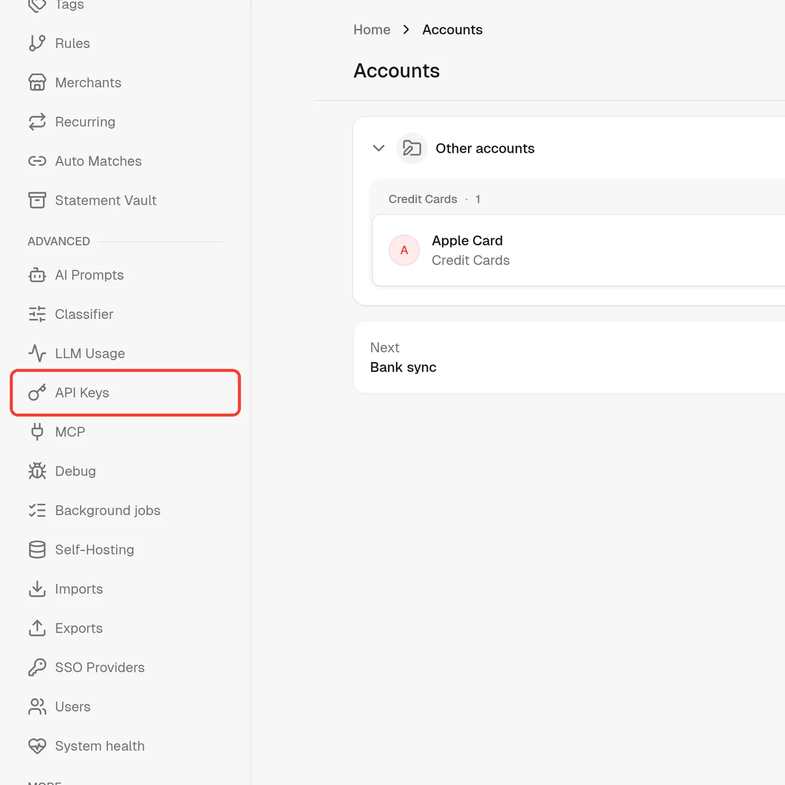
-
Click New API Key.
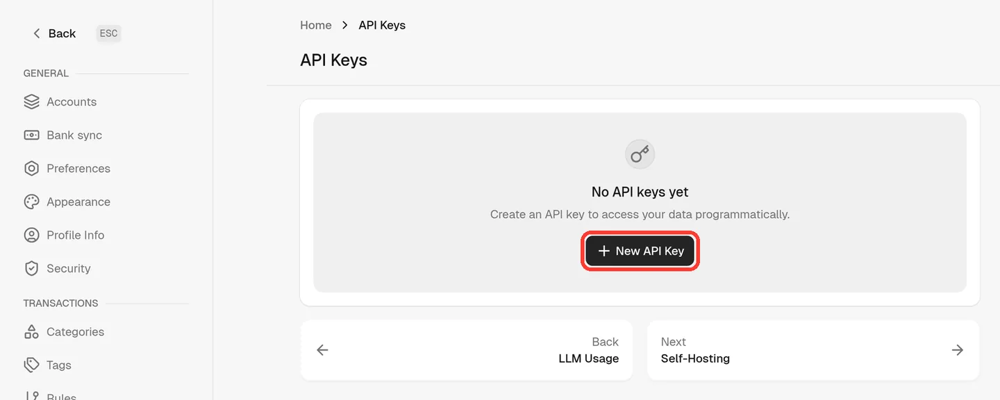
-
In API Key Name, type
WalletFeed. -
In Permissions, click Read/Write.
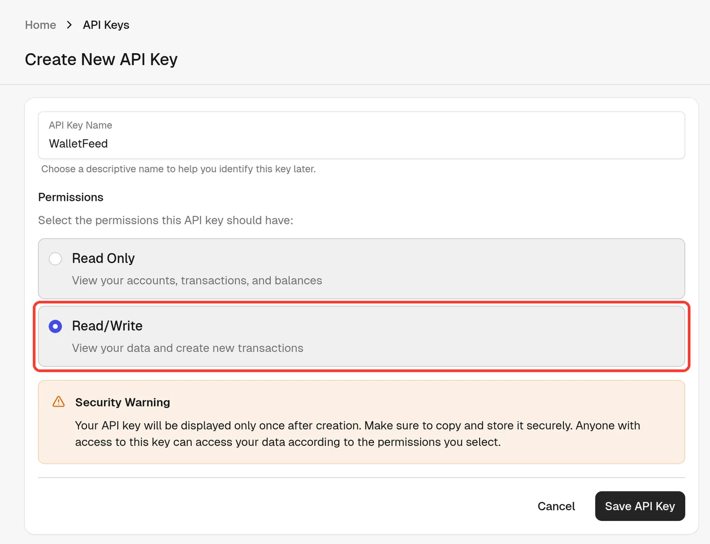
-
Click Save API Key.
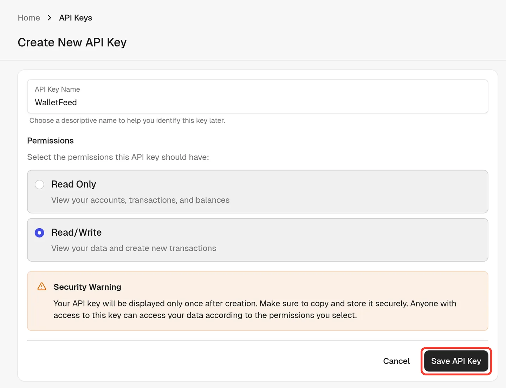
-
Click Copy API Key.
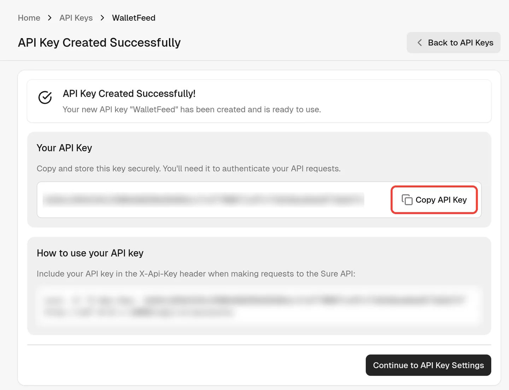
To make the key on your iPhone, do these steps:
- In WalletFeed, do steps 1 to 5 of Step 3.
- If WalletFeed shows Use an API Key Instead, tap Use an API Key Instead.
- Tap Open API Keys. Your web browser opens the API Keys page of your Sure server.
- If Sure shows its sign-in page, get access to your Sure account.
- If Sure then shows its dashboard, tap Open API Keys in WalletFeed again.
- On the API Keys page, do steps 6 to 10 of the first procedure in this section.
- Open WalletFeed again.
- Do steps 3 to 6 of Add the key in WalletFeed.
Add the key in WalletFeed
-
In WalletFeed, do steps 1 to 5 of Step 3.
-
If WalletFeed shows Use an API Key Instead, tap Use an API Key Instead.
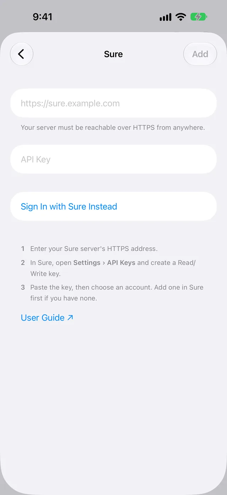
-
In API Key, paste the key. WalletFeed connects to Sure and shows Account.
-
In Account, select your card account.
-
Tap Add.
-
In the Send Transactions to Sure? message, tap Send.
To show Sign In with Sure again before you tap Add, tap Sign In with Sure Instead.
Data that Sure receives
WalletFeed sends these fields for each transaction to the Sure account that you selected:
| From Wallet | In Sure |
|---|---|
| The date of the transaction, in your time zone | Date |
| The merchant name, or the description if there is no merchant name | Name |
| The amount | Amount. A purchase is an expense, and a refund or other credit is income. |
| The currency | Currency |
| The ID of the transaction in Wallet | An ID that WalletFeed uses to change the transaction |
| Card statement text, amount in the other currency, exchange rate, merchant category code, posted date and type | Notes, one detail on each line, when WalletFeed adds the transaction. For example: 6.20 EUR, Exchange rate 0.9216, MCC 5814, Posted 2026-10-12 and Type pointOfSale. |
| The WalletFeed category | Category: your category with the same name, when WalletFeed adds the transaction. A payment or a transfer has no category. |
| A pending charge | The tag Pending. WalletFeed adds the tag to Sure if you have no tag with this name. |
The notes have no status. The tag Pending shows the status.
If you have a category with the same name as the WalletFeed category, WalletFeed sets this category when it adds the transaction. For example, Sure has Food & Drink, Transportation and Healthcare. If no category has the same name, Sure shows the transaction as Uncategorized. WalletFeed does not make categories in Sure.
Sure shows a purchase with a minus sign, for example -$6.75, and a refund in green without a minus sign. The Debt balance of the card increases with each purchase.
WalletFeed has no account, and no WalletFeed server keeps your transactions or keys. Your iPhone sends the transactions directly to your Sure server. The server address and the key or the sign-in stay in the Keychain on your iPhone.
New and changed transactions
While WalletFeed is open, Sure receives changes in seconds. When WalletFeed is not open, iOS starts WalletFeed approximately 1 hour or less after a change in Wallet. If Background Sync is on in Settings › Sync, WalletFeed then sends the change.
WalletFeed sends a pending charge to Sure with the tag Pending. When Wallet shows the charge as posted, the date or the amount can change. Then WalletFeed makes the same change in Sure and removes the tag Pending. WalletFeed keeps your other tags. WalletFeed does not change the name, category, merchant and notes that you set in Sure. The notes keep the status from the time when WalletFeed added the transaction, so they can still show Status pending.
If Wallet removes a pending charge, for example a declined charge, WalletFeed deletes the transaction from Sure. WalletFeed deletes only transactions from the last 90 days.
If WalletFeed sends a transaction again, Sure does not make a second copy. Sure keeps one transaction for each Wallet transaction.
WalletFeed sends one request for each new transaction. For posted charges and other changes, WalletFeed gets the list of transactions one time, then sends one request for each transaction that changed. A self-hosted Sure server accepts a maximum of 10,000 requests each hour.
Send previous transactions
A new destination also receives previous transactions from the start date in Settings › Sync › Initial History. Initial History is All until you change it.
You can also send previous transactions with Send History:
- In WalletFeed, tap Destinations.
- Tap the Sure destination, for example Sure · Apple Card.
- Tap Send History.
- Tap 30 Days, 90 Days, 1 Year or All. WalletFeed shows Sending History with the number of transactions that it sent.
To stop Send History before WalletFeed sends all of the transactions, tap Send History › Stop Sending.
Change or remove the destination
To open the Sure destination, do these steps:
- In WalletFeed, tap Destinations.
- Tap the Sure destination.
For more information, refer to Destinations.
Send only some transactions
- Set Filter to on.
- Select the transactions with Include, Minimum, Include Pending, Accounts, Categories and Exclude.
To send only Apple Card transactions to this destination, select Apple Card in Accounts.
For more information, refer to Choose what a destination receives.
Replace the key
- Make a new Read/Write key in Sure, as in Make a Read/Write API key in Sure. While the previous key is active, the new key must have a different name, for example
WalletFeed 2. - In the Sure destination, tap Replace Key.
- In API Key, paste the new key.
- Tap Replace.
WalletFeed keeps the new key only if the key can read the card account and write transactions.
If the destination uses Sign In with Sure, the destination shows Sign In Again, not Replace Key. Tap Sign In Again, then do steps 7 to 10 of Step 3. WalletFeed keeps the new sign-in only if it can get access to the card account. Then WalletFeed revokes the previous sign-in.
Stop or remove the destination
To stop the destination but not remove it, set Enabled to off.
To remove the destination, do these steps:
-
In the Sure destination, tap Delete.
-
In the Delete Sure · Apple Card? message, tap Delete.
-
On your computer, open Settings › API Keys in Sure.
-
Click Revoke for the WalletFeed key.
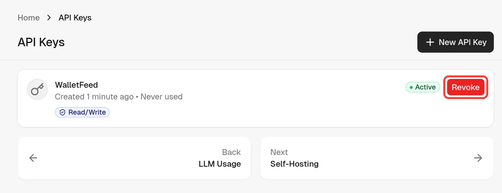
-
Click Confirm.
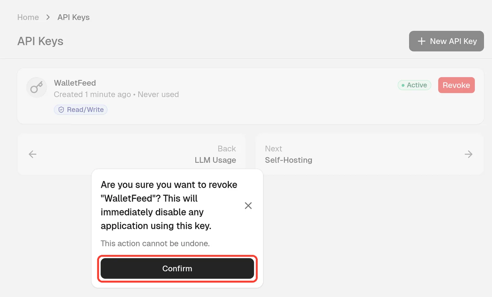
If the destination uses Sign In with Sure, steps 3 to 5 are not necessary. When you remove the destination, WalletFeed revokes its sign-in on your Sure server. Then Settings › MCP in Sure does not show its WalletFeed row. If WalletFeed cannot connect to your server at that time, the row stays. To remove the row, click Revoke in Settings › MCP.
If you remove the destination, the transactions that WalletFeed sent stay in Sure.
If there is a problem
If WalletFeed shows "Use your server's HTTPS address."
The address starts with http://. WalletFeed connects only to https:// addresses.
- Get an
https://address for your Sure server, as in Step 1. - In WalletFeed, type the
https://address.
If WalletFeed shows "Create an account in Sure"
When Sure has no accounts, WalletFeed shows "Create an account in Sure for your card, then try again."
- Add a card account in Sure, as in Step 2.
- If you used Sign In with Sure, do Step 3 again.
- If you used an API key, delete the key in API Key in WalletFeed.
- Paste the key in API Key again.
- Make sure that WalletFeed shows Account.
If WalletFeed shows "Key rejected (HTTP 401)"
When Sure does not accept the key, WalletFeed shows "Key rejected (HTTP 401). Check it, or create a new one in Sure." The key is incorrect or expired, or you clicked Revoke for the key in Sure.
- Make sure that you copied the key with Copy API Key, and not the
curlexample. - If you copied the
curlexample, do the steps in If you closed the key page before you copied the key. - If you copied the key with Copy API Key, make a new Read/Write key in Sure, as in Make a Read/Write API key in Sure. While the previous key is active, the new key must have a different name, for example
WalletFeed 2. - In WalletFeed, paste the new key in API Key.
If WalletFeed shows "This key is Read Only" or "This key can't write"
The key does not have the Read/Write permission. WalletFeed must have a Read/Write key to write transactions to Sure. WalletFeed shows "This key is Read Only. Create a Read/Write key." or "This key can't write (HTTP 403). Use a Read/Write key."
- On your computer, open Settings › API Keys in Sure.
- Click Revoke for the key.
- Click Confirm.
- Make a new Read/Write key, as in Make a Read/Write API key in Sure.
- In WalletFeed, paste the new key in API Key.
If WalletFeed shows "This server doesn't support sign-in"
Your Sure server does not have Sign In with Sure, for example because the server is older than June 2026. WalletFeed shows "This server doesn't support sign-in. Use an API key." Then WalletFeed shows the API key form.
- Make sure that the address is the same address that you use to open Sure in a web browser.
- If the address is correct, make an API key, as in Make a Read/Write API key in Sure.
- Paste the key in API Key.
If WalletFeed shows "Sure signs in at"
Sure gives a different address for Sign In with Sure. Sure gets this address from APP_URL in its configuration. WalletFeed shows "Sure signs in at", then that address, then "Enter that address instead."
- If the address from Sure is the
https://address of your server, type that address in WalletFeed. - If the server is behind a proxy, set
APP_URLin the Sure configuration to its publichttps://address. - To use an API key, tap Use an API Key Instead.
If Destinations shows "Authentication failed" for Sure
Sure does not accept the key or the sign-in when WalletFeed sends transactions. For example, this occurs if the key is Read Only, or if you clicked Revoke for the key in Sure. For a sign-in, it occurs if you clicked Revoke for WalletFeed in Settings › MCP in Sure.
-
In WalletFeed, tap Destinations.

-
Tap the Sure destination.
-
If the destination shows Replace Key, replace the key, as in Replace the key.
-
If the destination shows Sign In Again, tap Sign In Again.
While WalletFeed sends previous transactions, the destination also shows "Authentication failed. Replace the key." or "Authentication failed. Sign in again." WalletFeed can also show "Signed out. Open the destination and tap Sign In Again." Step 4 corrects this problem.
If WalletFeed shows "Can't connect" or "Couldn't connect"
WalletFeed cannot connect to your Sure server. The server does not operate, or your iPhone can connect to it only on your home network.
- Make sure that your Sure server operates.
- Disconnect your iPhone from your home Wi-Fi.
- On your iPhone, open the
https://address of your Sure server in Safari. - If Sure does not open, get an
https://address for all locations, as in Step 1. - If you added Sure in WalletFeed, tap Send Test in the Sure destination.
The test writes a transaction of $4.20 with the name WalletFeed to the card account in Sure. You can delete the test transaction in Sure.
If WalletFeed shows "No Sure API at this address"
When the address is not correct, WalletFeed shows "No Sure API at this address, or the account is gone." If you deleted the card account, WalletFeed also shows this message when you replace the key.
- Make sure that the address is the same address that you use to open Sure in a web browser.
- If you deleted the card account in Sure, add a new card account, as in Step 2.
- If you added a new card account, add Sure again in WalletFeed, as in Step 3.
If you closed the key page before you copied the key
Sure shows a key one time only. Sure also does not accept two active keys with the same name.
- On your computer, open Settings › API Keys in Sure.
- Click Revoke for the WalletFeed key.
- Click Confirm.
- Make a new Read/Write key in Sure, as in Make a Read/Write API key in Sure.
- In WalletFeed, paste the new key in API Key.
If the card balance in Sure is not correct
Sure calculates the balance from the balance in Balance on date: and from the transactions. If Sure receives many transactions in a short time, Sure can show a balance without the last transaction.
-
In Sure, open the card account.
-
On the right side of the account name, click the icon with two arrows in a circle. Sure calculates the card balance again.
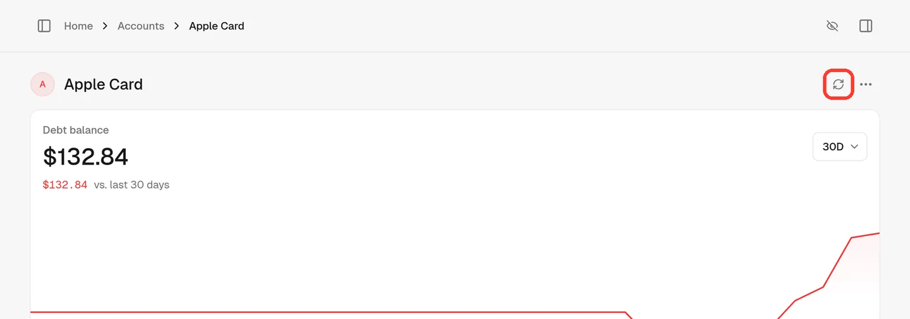
 Scan with your iPhone
Scan with your iPhone
Related
Updated November 20, 2026